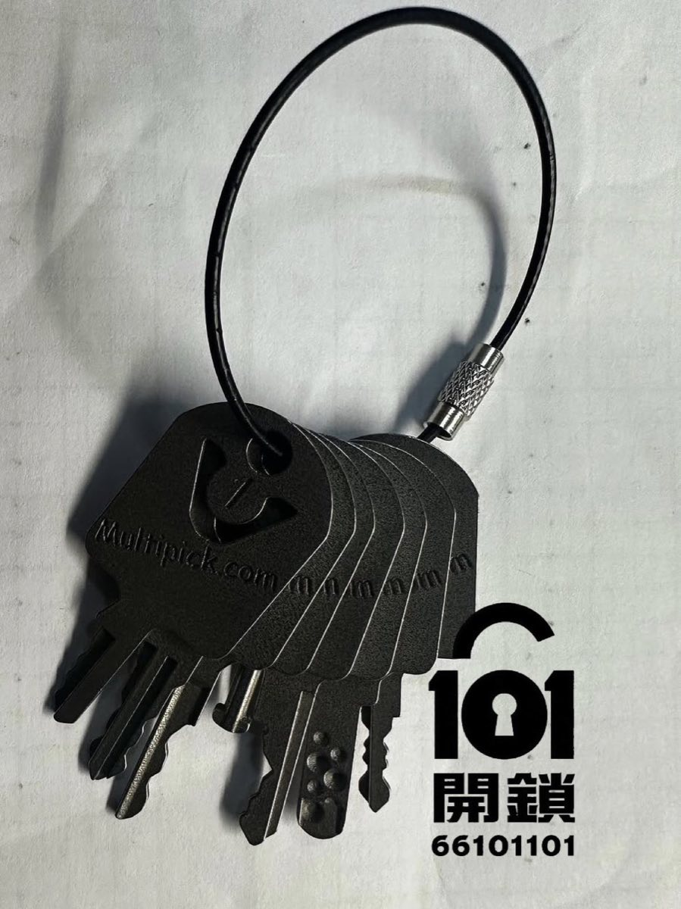
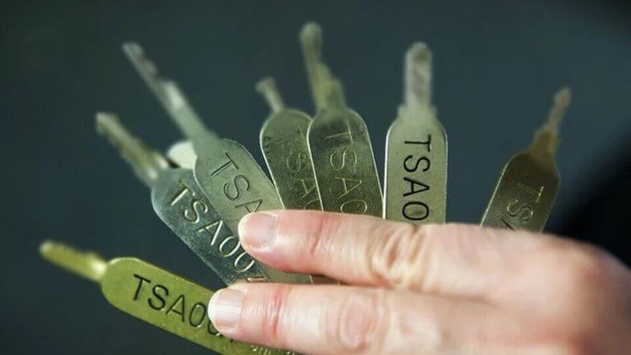

先發相片
發送行李喼鎖位、品牌或型號、卡住位置，可加快判斷。
香港行李箱開鎖服務指南
人在香港遇到行李箱鎖匙不見、行李篋鎖匙遺失、TSA鎖打不開、忘記行李箱密碼或行李篋密碼，先不要自行撬鎖或剪拉鏈。101開鎖可先透過 WhatsApp 查看鎖位相片、所在地區及授權資料，再評估是否能協助開鎖。

101開鎖可先作初步評估：如果你人在香港，行李箱鎖匙不見、行李篋鎖匙遺失、TSA海關鎖打不開、行李箱密碼或行李篋密碼忘記，請先 WhatsApp 發送行李外觀、鎖位近照、所在地區及問題描述。我們會先核實行李擁有權，再按鎖具類型判斷是否能協助開鎖。
發送行李喼鎖位、品牌或型號、卡住位置，可加快判斷。
酒店、屋企、辦公室、機場附近或港九新界地區，可先提供位置。
行李箱開鎖前鎖匠會要求客人提供合理證明，避免未授權開鎖風險。
鎖匙不見、後備匙留在海外或匙斷在鎖內，可以先發鎖位相片確認是否適合由鎖匠處理。
TSA007、TSA008 或其他 TSA lock 卡住、密碼正確但不能開，可先查詢，不建議自行硬撬。
如三位或四位密碼鎖忘記密碼，先不要亂試到鎖扣變形；提供照片後再判斷可行處理方法。
無論你在酒店、住宅、辦公室、商場或準備出發前才發現行李鎖打不開，先提供所在地區，可幫助我們判斷能否安排及預估處理時間。
旅客在酒店房、服務式住宅或屋企發現鎖匙遺失，可先發送鎖位相片及地址區域。
出差、展覽或活動前遇到行李鎖問題，可說明是否急用證件、衣物或工作用品。
如接近航班時間，請直接致電並提供位置；是否能趕及處理，需按距離、鎖具及現場情況判斷。
2015 年公開報導提及 TSA 行李鎖通匙令圖像外洩，其後網上出現複製模型及銷售討論。這能說明 TSA鎖有安全限制，但不代表應自行嘗試開鎖。
網上有不少關於 TSA key、TSA鎖破解或行李箱密碼鎖開法的內容，但自行撬鎖、剪扣或硬拉拉鏈，可能令箱體變形，亦可能損壞入面物品。若目標是盡量保留行李箱，較穩妥做法是先找品牌售後或鎖匠評估。

| 情境 | 較合適做法 | 原因 |
|---|---|---|
| 前往或途經美國 | 考慮使用 TSA 認證密碼鎖或行李箱內置 TSA 鎖 | 降低安檢時鎖具或行李箱被強行破壞的機會。 |
| 一般短途旅行 | 使用品質可靠、容易辨識是否被打開的行李鎖 | 主要功能是避免誤開、拉鏈鬆開及降低低門檻盜取風險。 |
| 證件、現金、珠寶、電腦 | 隨身攜帶，不放入寄艙行李 | 行李鎖不等於保險箱，高價值物品應由自己看管。 |
| 行李箱鎖匙遺失或忘記密碼 | 先找品牌售後；急用時找能核實擁有權的鎖匠協助 | 避免自行破壞拉鏈、鎖扣、箱殼，亦避免未授權開鎖風險。 |
手機可向左／右滑動查看完整比較表。
新行李箱或保養期內產品，先查看品牌說明、保養卡或官方售後安排，避免不必要破壞。
行李箱拉鏈、鎖扣及箱殼一旦變形，後續維修成本可能高於處理鎖具本身。
如需 101開鎖協助，請準備行李擁有權證明、位置及鎖具照片；我們會按情況判斷是否能處理。
先 WhatsApp 發送行李箱／行李篋外觀、鎖位及所在地區；我們會按個案核實及初步回覆可行處理方向。
清晰度、角度、比例參照物、匙齒完整度及鎖匙類型，都會影響能否從照片推算可用資料。
不能用 TSA 通匙設計直接推論所有住宅門鎖同樣脆弱；鎖膽等級、匙胚限制及安裝方式都不同。
不要公開展示匙齒，不把鎖匙與住址資訊同時曝光；若懷疑鎖匙曾外流，再由鎖匠按鎖芯評估是否需要換鎖膽。
以下都是較接近即時服務的查詢，不只是旅遊知識。描述越清楚，我們越容易判斷是否能協助。
可以先透過 WhatsApp 發送行李箱或行李篋外觀、鎖位近照、所在地區及問題描述。我們會先核實行李擁有權，再按鎖具類型評估是否能協助開鎖。
先不要自行撬鎖、剪拉鏈或硬拉鎖扣，以免損壞箱體。可先確認品牌售後安排；如在香港需要急用行李，可聯絡101開鎖作初步評估。
不一定。是否需要剪鎖或更換零件，要看行李箱或行李篋品牌、鎖具類型、鎖扣狀態及是否有其他損壞。建議先發相片，不要自行破壞。
港島、九龍、新界、酒店、住宅、辦公室、商場或機場附近都可以先查詢。能否安排及時間，需按所在地區、交通、鎖具和師傅情況確認。
很多三位密碼 TSA lock 沒有附旅客使用的鎖匙；鎖孔是供授權安檢人員使用。旅客應按品牌說明設定及使用密碼。
TSA鎖是帶有 Travel Sentry 或相關認證標記的行李鎖。它的主要用途是讓授權安檢人員在需要檢查寄艙行李時開啟及重新鎖上，減少破壞鎖或行李箱的機會。
行李鎖即時查詢
先發送鎖位相片、問題描述及所在地區；如屬家居鎖匙照片外洩或鎖匙曾被借出，我們亦可按鎖膽類型評估是否需要更換鎖膽。